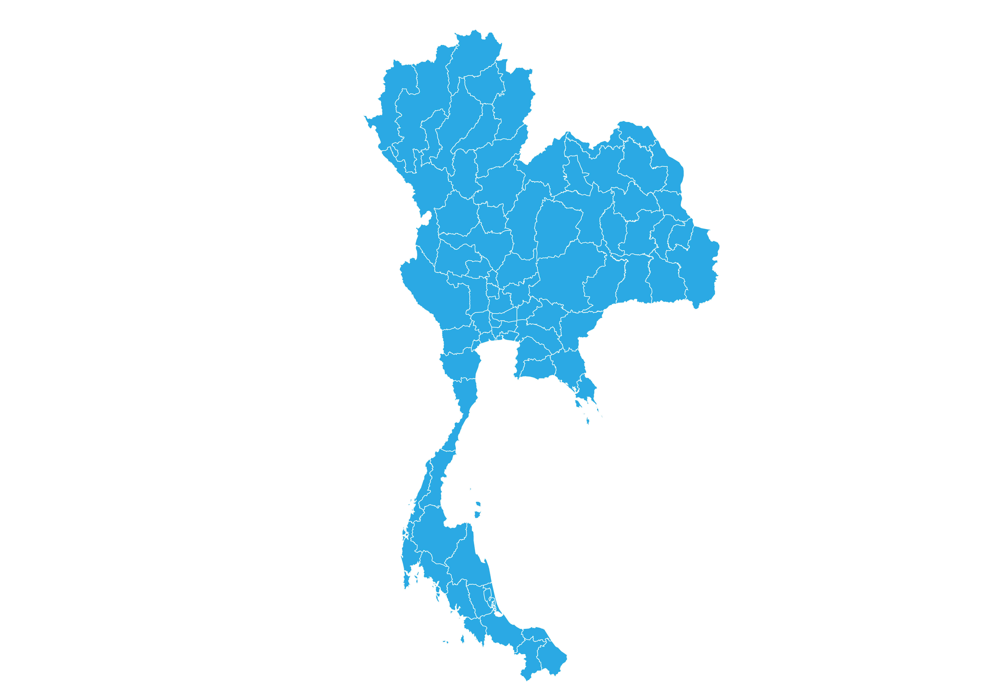

Thailand is one of the world's most renowned holiday destinations located in Southeast Asia. Thailand has various things to see and do, from culture, religion, food, and nature. It's famous for tropical beaches, opulent royal, ancient ruins and ornate temples displaying figures of Buddha. The capital name Bangkok is an ultramodern cityscape that rises next to quiet canal side communities and the iconic temples of Wat Arun, Wat Pho and the Emerald Buddha Temple. Let's find out where you want to go by moving your cursor to the picture.
